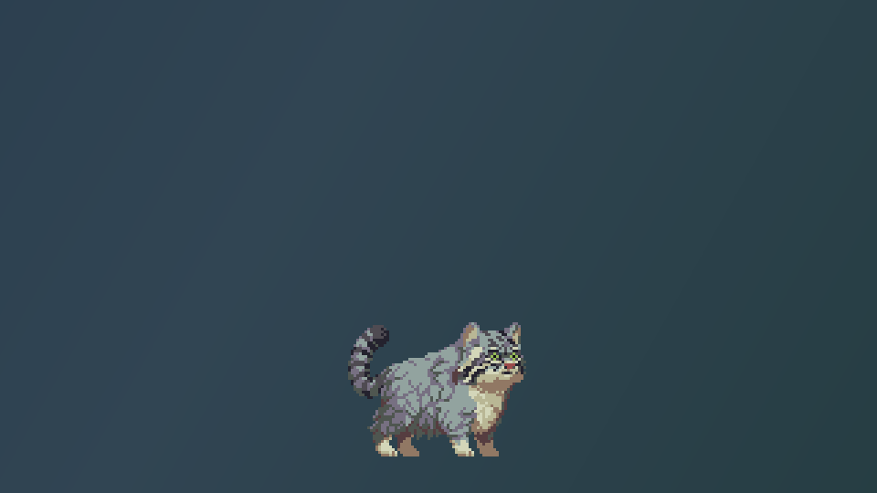
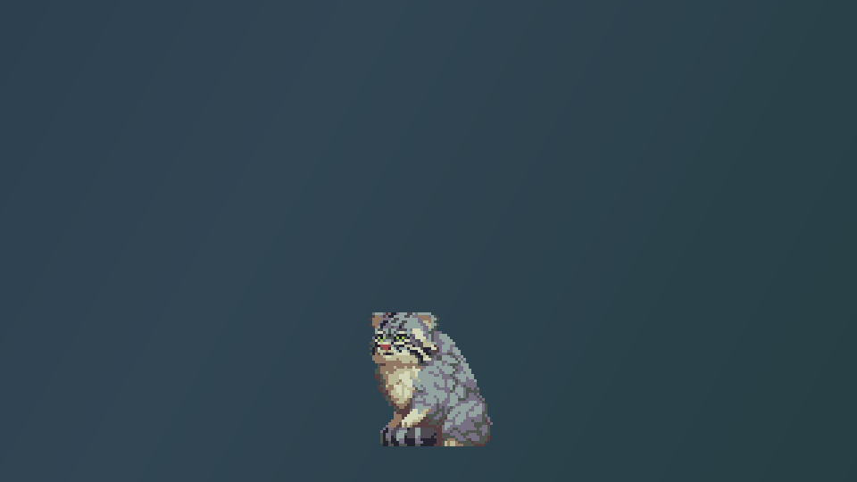
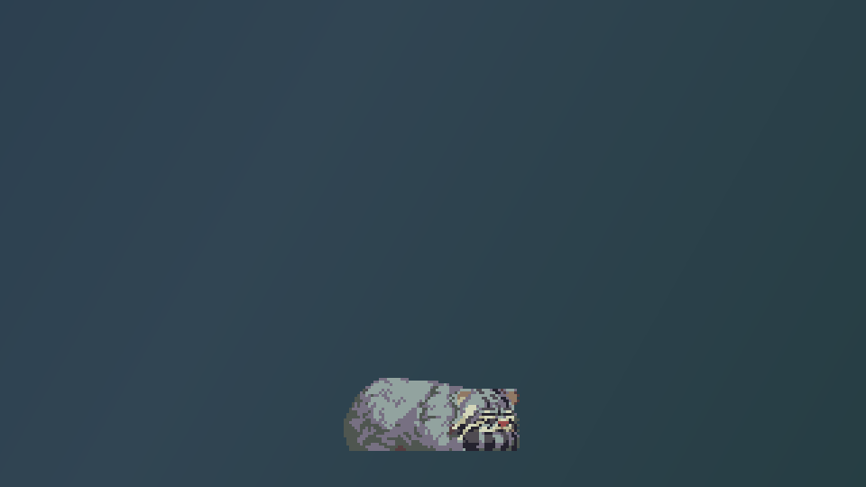
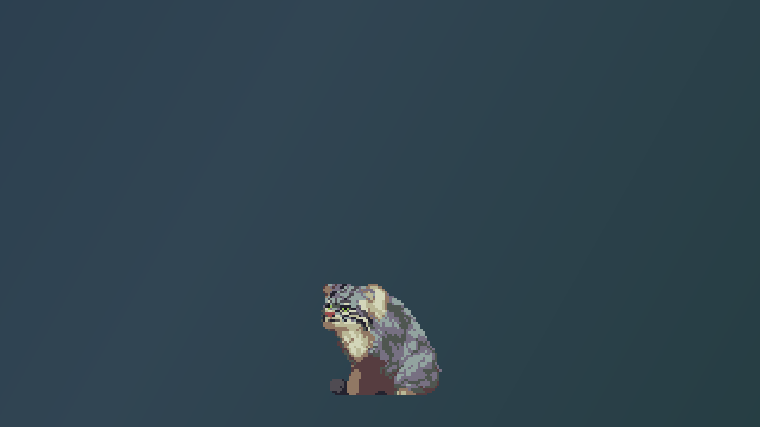
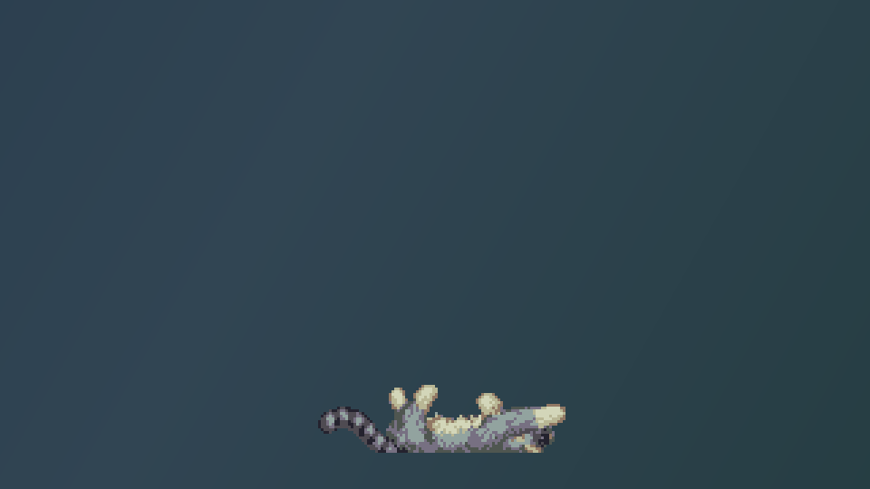
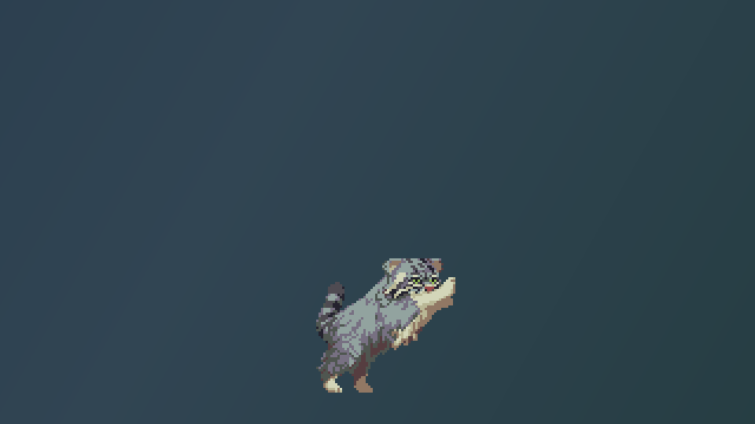
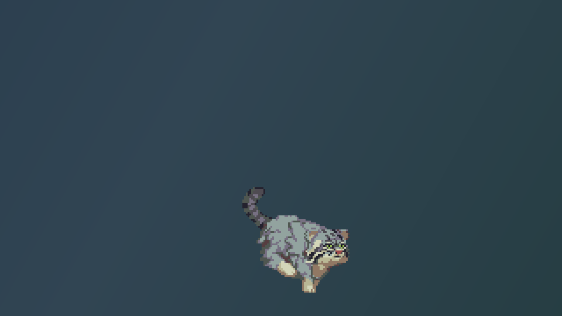
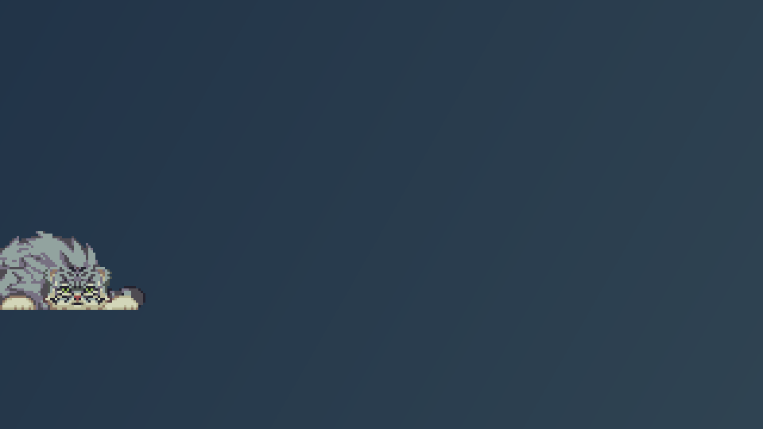

Демонстрационные кадры реального интерфейса на нейтральном фоне. Если capture_method в shots.json равен staged-widget-render, это отрисовка виджета приложения, а не захват рабочего стола Windows. Нажмите на кадр, чтобы открыть полный снимок.







